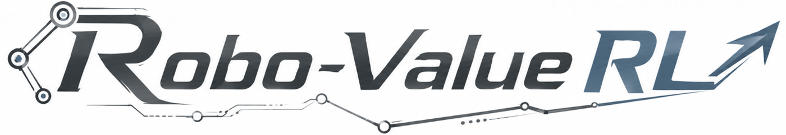
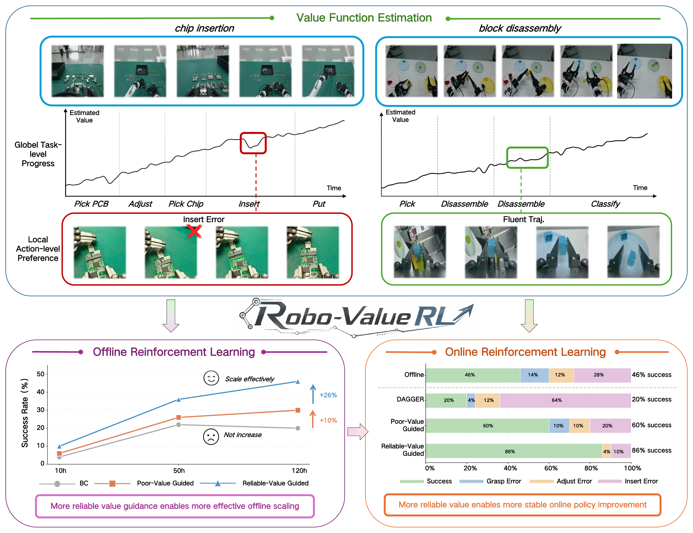

{kind=link}
Chip Insertion
Video loading area

Offline-to-Online Robotic Reinforcement Learning
Robo-ValueRL studies how value-function reliability shapes offline-to-online robotic reinforcement learning. It learns history-conditioned value estimates, propagates them into quality-conditioned policy pretraining, and uses reliable value guidance to stabilize online improvement from real robot rollouts.
Robo-ValueRL system introduction.
Video loading area
Video loading area
The framework links value estimation, quality-conditioned policy learning, and residual online adaptation in one offline-to-online pipeline.

Recent visual history reduces ambiguity from occlusions, repeated motions, and visually similar task stages. The three clips can later show value progress, error sensitivity, and history ablations.
Estimator demo placeholder
Estimator demo placeholder
Estimator demo placeholder
Value differences become action-quality indicators for efficient one-step action generation under high-frequency control. This group can show quality labels and task-specific policy behavior.
Policy demo placeholder
Policy demo placeholder
High-quality rollout segments train a lightweight adapter while preserving the pretrained base behavior. Later videos can show the residual gate, self-correction, and failure recovery.
Adaptation demo placeholder
Across 240 hours of offline demonstrations and over 3,000 online rollout trajectories, reliable value estimates support stronger offline scaling and more stable online improvement.

Reliable value functions preserve global progress, maintain local fluency, and detect execution errors. These properties align with downstream policy success.


Detailed demos
Failure recovery, self-correction, and online adaptation are treated as method/result evidence rather than intro tasks.
Detailed demo loading area
Detailed demo loading area
Detailed demo loading area
Portrait demo loading area
Robo-ValueRL treats value reliability as an interface between heterogeneous robot experience and downstream policy learning.
A history-conditioned value estimator infers task progress from multi-view observations and visual history. Its value differences are converted into action-quality indicators, allowing the VLA policy to condition on high-quality behavior during offline pretraining.
During online improvement, the same value guidance filters rollout segments and activates a lightweight residual adapter only where targeted correction is useful. This keeps adaptation focused while preserving the pretrained behavior prior.

Please cite the arXiv paper if you find Robo-ValueRL useful.
@misc{xia2026robovaluerlreliablevalueestimation,
title={Robo-ValueRL: Reliable Value Estimation for Offline-to-Online Reinforcement Learning},
author={Wenke Xia and Pei Ren and Wenbo Yu and Yizhuo Zhang and Jifan Li and Yixue Zhang and Yinuo Zhao and Qingyang Gao and Jianlong Fu and Jian Tang and Ji-Rong Wen and Zhengping Che and Di Hu},
year={2026},
eprint={2607.09866},
archivePrefix={arXiv},
primaryClass={cs.RO},
url={https://arxiv.org/abs/2607.09866},
}